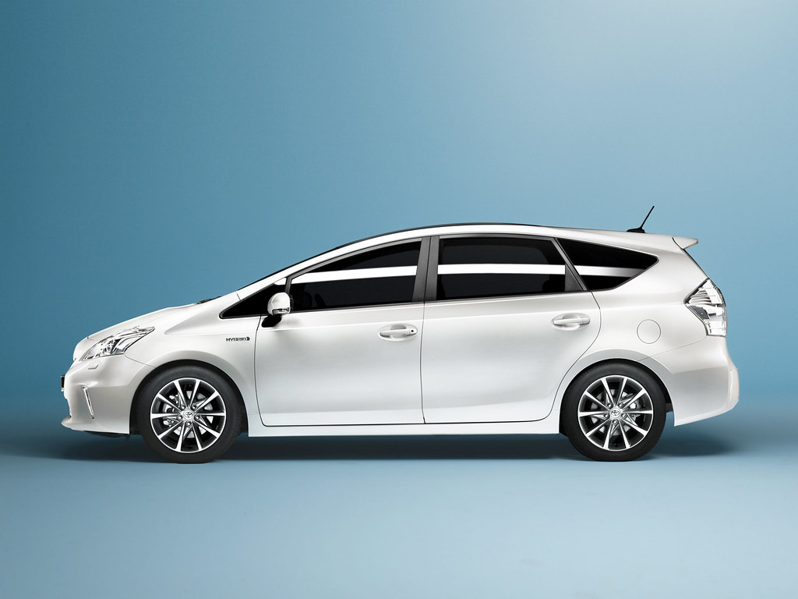

C.A.I. highly encourage readers to reduce their carbon footprint and emissions. Making life decisions not for only themselves, but their grandkids and great grandkids. If not, who knows if our great grandkids will even survive on earth? Therefore, it is important we tackle this issue. Things like using solar power on your houses, electric or at least hybrid cars, reducing water waste, and recycling products. These can all help towards slowing down global warming, while others such as the U.N. solve the bigger issues.
Global warming is a huge issue on Earth. It is an issue that we need to act against sooner, rather than later. Otherwise, the younger generation will truly witness and their kids, the causes that global warming can cause. Climate scientises claim that we only have 20 years left before things start to become irreversible. By 2040 global warming would have increased by 1.5 degrees Celsius. The consequence of this will effectively be baked into the natural systems of the planet.
